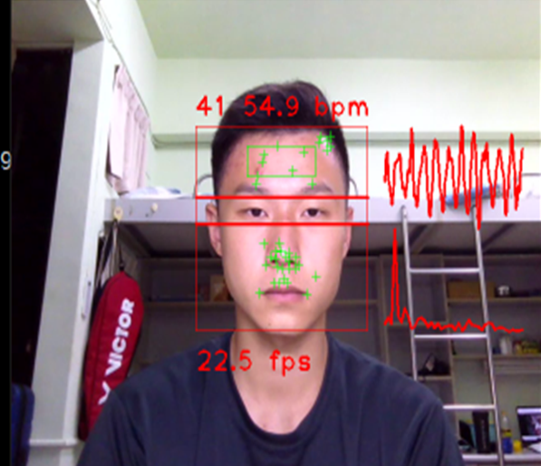
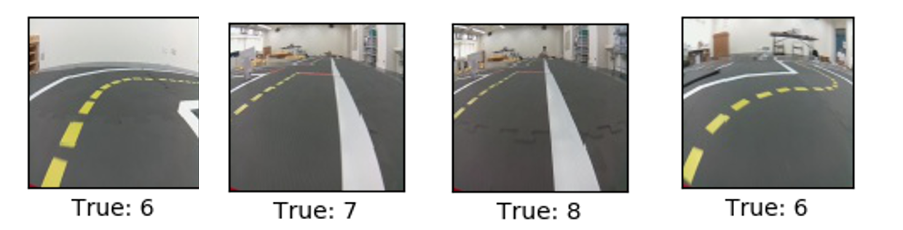
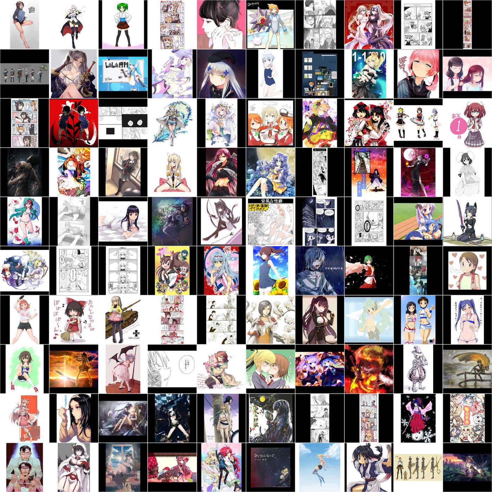

Edwin Arkel Rios
MSc Student in EECSNational Chiao Tung University
Hsinchu, Taiwan
edwinarkel.rios@gmail.com
[GitHub] [Resume]
|
|
Edwin Arkel Rios
MSc Student in EECSNational Chiao Tung University Hsinchu, Taiwan edwinarkel.rios@gmail.com [GitHub] [Resume] |
My name's Edwin and I come from Panama. I did my undergrad studies in Energy Engineering. National Cheng Kung University in Tainan, Taiwan. Currently, I'm pursuing a MSc in Electrical Engineering and Computer Science in National Chiao Tung University, Taiwan. My research interests include deep learning and its applications for computer vision. Some general tasks that I've conducted research on include image classification and generation, image-to-image translation, face recognition, time-series classification, regression and generation, self-supervised learning, and multimodal learning. Among the specific applications I have worked on are computer vision for contactless physiological signal acquisition and analysis, and domain adaptation of vision transformer models using transfer learning for analysis of anime-style images.
|  |
Remote Photoplethysmography (RPPG) Studies Systematic studies of RPPG technologies using C++, Python and OpenCV. Done for NCTU Parallel Computing Systems (PCS) Lab. |

|
DeblurGAN for Deblurring of Videos Done in Python, using OpenCV and PyTorch. Final project for Digital Image Processing course (108-1). Also included slides for midterm presentation covering DeblurGANv2 paper. [Final Project Poster] [DeblurGANv2 Paper Slides] |
|  |
Computer Vision for Autonomous Driving Done in Python, making use of TensorFlow, Keras and OpenCV, and ROS. Final project for Deep Learning course (108-1). Also included slides for midterm presentation covering VGG network paper. [VGG Paper Slides] [Final Project Slides] |
|  |
Anime related Object classification and detection for anime characters. [Project page] |